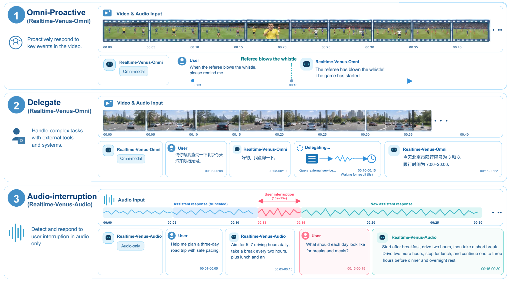
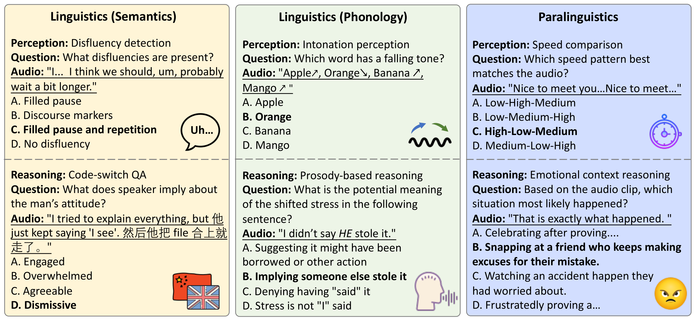
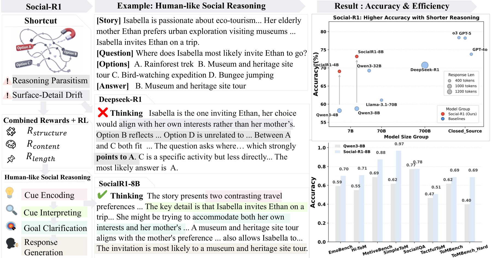
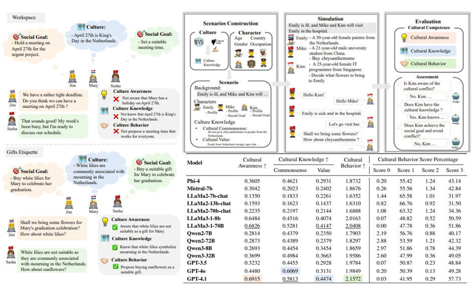
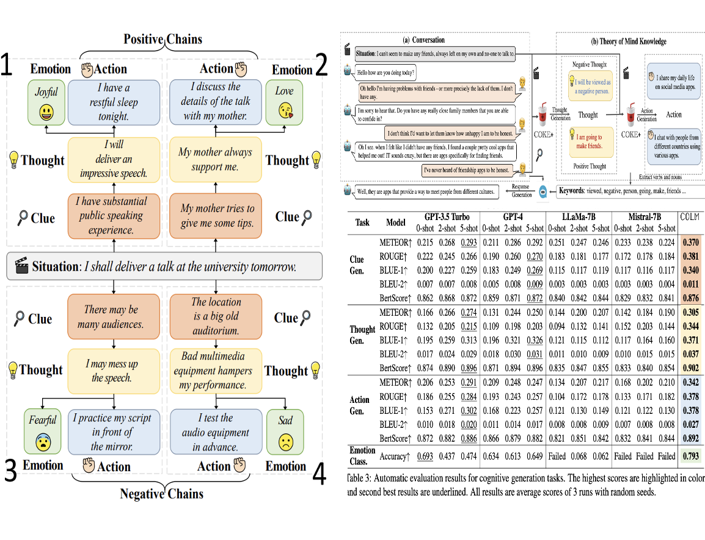
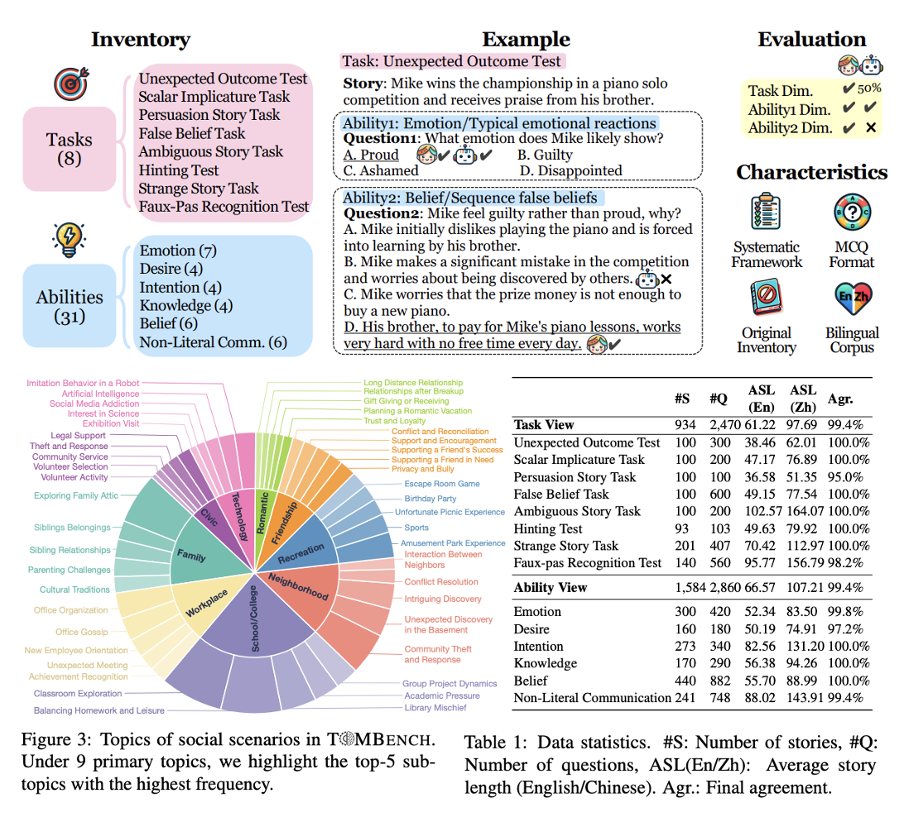

Technical Report · 2026Jincenzi Wu — Academic Homepage
I am a Ph.D. student at 🇭🇰 The Chinese University of Hong Kong, advised by Prof. Helen Meng (IEEE Fellow). I collaborate with Prof. Xing Xie at Microsoft Research and previously interned with the 🇨🇳 CoAI group at Tsinghua University, working with Prof. Minlie Huang. I received my master’s degree from 🇺🇸 New York University and my undergraduate degree from 🇦🇺 Deakin University, where I worked with Prof. Lei Pan.
My research aims to advance interaction intelligence: how AI systems understand context, reason, and respond effectively in interaction. My work spans evaluation, post-training, and interactive systems, with a current focus on real-time omni interaction.
I am always open to research collaborations. Feel free to email me if you’re interested in working together.
🔥 News
- [Oct 2026]EchoChat — NeurIPS 2026.
- [Sep 2026]Realtime-Venus — Technical Report · Core Contributor. #1 Daily Paper
- [Jul 2026]Evaluating Human-likeness in LLMs — ICML 2026.
- [Jan 2026]MMSU — ICLR 2026.
- [May 2025]SocialCC and InSerter — ACL 2025 Main.
- [Aug 2024]COKE — ACL 2024 Senior Area Chair Award.
- [May 2024]COKE and ToMBench — ACL 2024 Main.
📝 Selected Publications (Full Publications)
* Equal contribution.

ICLR 2026
Preprint · 2026
ACL 2025 Main
ACL 2024 Main
ACL 2024 MainToMBench: Benchmarking Theory of Mind in Large Language Models
Best Paper Nomination
- Used in A Definition of AGI (co-authored by Yoshua Bengio).
- Cited by Frank & Goodman, Stanford.
🏆 Awards & Recognition
- Senior Area Chair Award (0.48%)ACL 2024 · COKE